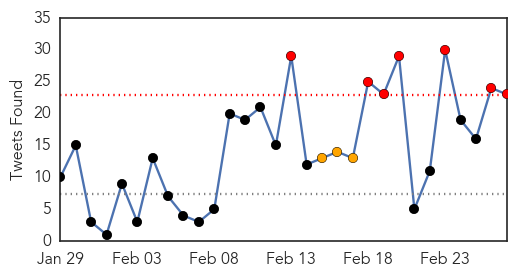
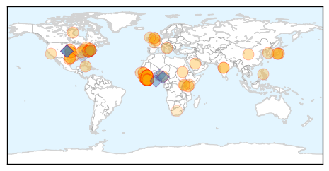
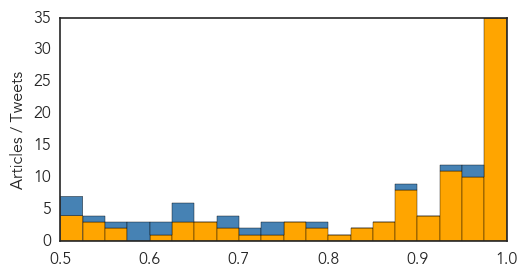

Ebola
30-Day Web Trend
0 alerts, 0 warnings

30-Day Twitter Trend
15 alerts, 4 warnings

Article Locations
Article Confidences
Top Articles:
- 1.000
- Liberia’s President Urges U.S. to Continue Ebola Aid
- 1.000
- Ebola outbreak: Disease ebbs in West Africa as aid agencies warn against complacency
- 1.000
- Two children being tested for Ebola virus at Royal Children's Hospital Melbourne are clear
- 0.999
- Ebola is not over yet
- 0.999
- Bioethics review cites Ebola response glitches, offers advice
- 0.999
- Thoughts turn to recovery as Ebola slowly ebbs in West Africa
- 0.998
- Decision on Ebola mass vaccination in August at earliest: WHO
- 0.997
- Read Health News & Articles at TheHealthSite.com
- 0.997
- Politico SL News Sierra Leone gov’t consults to open border
- 0.995
- Ellen Johnson Sirleaf: Ebola battle far from over
- 0.995
- Decision on Ebola Mass Vaccination in August at Earliest
- 0.995
- Decision on Ebola mass vaccination in August at earliest
- 0.995
- US wraps up Ebola military mission in Liberia
- 0.994
- Fatality rate from Ebola mysteriously dropping;
- 0.993
- Liberia leader thanks US as Ebola mission ends
- 0.993
- WHO: Sharp decline in Ebola cases has now leveled off
- 0.992
- Media, politicians fueled the public's fear
- 0.991
- Three words of advice for WHO Africa's new chief
- 0.989
- U.S. Ebola survivor Dr. Craig Spencer gives his side of the stor
- 0.988
- U.S. Ebola survivor Dr. Craig Spencer gives his side of the stor - KLTV.com-Tyler, Longview, Jacksonville, Texas
- 0.988
- Asian herb holds promise in fight against Ebola
- 0.985
- Obama Tells Liberia’s Johnson Sirleaf Ebola Aid Will Continue
- 0.984
- Liberia-U.S. clinical research partnership opens trial to test Ebola treatments
- 0.984
- A Canadian epidemiologist on the challenges of staying ahead of the Ebola virus in West Africa
- 0.984
- A Chinese Traditional Drug Compound was Assessed as the Most Effective Drug In Stopping Ebola Virus Infection, Study
- 0.983
- U.S. Ebola survivor Dr. Craig Spencer gives his side of the stor
- 0.981
- Ebola aid workers return home safely - Sierra Leone
- 0.980
- Wipeout Run coming to Baltimore
- 0.980
- Little Italy coming together for ravioli dinner
- 0.980
- Carroll County Sheriff's make burglary arrest
- 0.979
- UVF alum among Time magazine Person of the Year honorees for Ebola epidemic work
- 0.979
- NIAID partners with Liberian government to test ZMapp drug for Ebola virus disease
- 0.978
- Early Warning for Ebola: Strengthening Africa's Capacity to Anticipate Risk of Outbreaks
- 0.978
- Trapping the Ebola virus in transit
- 0.976
- US Ends Its Ebola Military Mission in Liberia
- 0.974
- 'Extraordinary Strides' Fighting Ebola in Liberia
- 0.973
- Jimmy Whitworth to take up epidemic preparedness role at London School of Hygiene & Tropical Medicine
- 0.972
- News, Sports, Jobs, Community - The Leader Herald
- 0.965
- Liberia mission done, 101st Airborne heads home
- 0.962
- Edmonton aid worker back from life-changing mission in Sierra Leone
- 0.960
- Liberian Leader Thanks US for Ebola Support
- 0.958
- TSRI scientists show how to target weak spots of Marburg virus with future treatments
- 0.957
- Thoughts turn to recovery as Ebola slowly ebbs in West Africa
- 0.957
- 101st Airborne Division cases colors, heads home after successful mission in Liberia
- 0.953
- Polio and Ebola: Legacy in Action - Sierra Leone
- 0.944
- Thoughts turn to recovery as Ebola slowly ebbs in West Africa
- 0.943
- Thoughts turn to recovery as Ebola slowly ebbs in West Africa
- 0.942
- Ernest Koroma is Constantly Inspiring; The Ebola Audit is Latest Example
- 0.939
- Thoughts turn to recovery as Ebola slowly ebbs in West Africa, Africa News & Top Stories
- 0.939
- Liberia will end Ebola curfew and reopen borders, says president
Showing top 50 articles...
Top Tweets:
- 0.952
- Ebola Update: 23,781 confirmed, probable & suspected cases reported in 3 most affected countries, with 9,637 deaths.
- 0.951
- Ex-Ebola Czar Ron Klain: 5 management lessons from the Ebola outbreak http://t.co/j5jokmq7Sy
- 0.929
- RT: 99 Ebola cases in past week, nearly two-thirds in Sierra Leone: WHO: Guinea, Liberia and Sierra Leone reported... http:/…
- 0.907
- Liberia's President Urges US to Continue Ebola Aid - New York Times http://t.co/5tF5DFrxBV ebola EVD
- 0.896
- RT: Sierra Leone lockdown will not help halt Ebola: MSF http://t.co/rrljv5Dx7J Reuters Africa Ebola EbolaOutbreak
- 0.894
- Fatality Rate Is Falling in West African Ebola Clinics - New York Times http://t.co/m5QGr819tr ebola EVD
- 0.894
- Fatality Rate Is Falling in West African Ebola Clinics - New York Times http://t.co/O2IZzw3Cfq ebola EVD
- 0.883
- 1.@DlaminiZuma applauds 20% of Liberia’s households for returning to work after the Ebola outbreak AfricaAgainstEbola
- 0.872
- support to Ebola Outbreak in WestAfrica(ASEOWA) is a special task force to fight against ebola http://t.co/jKaVIRMZ7U
- 0.852
- For the latest information about the 2014 Ebola outbreak in West Africa, see our update page http://t.co/TaSzwYJLgj
- 0.838
- RT: Liberian Leader Thanks US for Ebola Support: Seven months after the Ebola outbreak turned Liber... http://t.co/Y8b0UcDXPx Eb…
- 0.837
- Decision on Ebola mass vaccination in August at earliest: WHO - Reuters http://t.co/DxWFiMCs91 ebola EVD
- 0.837
- Decision on Ebola mass vaccination in August at earliest: WHO - Reuters http://t.co/8a9IQaApUt ebola EVD
- 0.836
- US, Liberia kick off trial of Ebola drug ZMapp - Reuters http://t.co/erJAasRcxU ebola EVD
- 0.781
- Patient transported from Clarendon apartment does not have Ebola - Washington Post http://t.co/j76hJh9BeT ebola EVD
- 0.778
- FACT SHEET: @_AfricanUnion Response to the Ebola Epidemic Africaagainstebola @AIRTEL_KE http://t.co/R2vFlb4kYj
- 0.772
- Ebola Outbreak and MentalHealth http://t.co/8SOJBBy9AL
- 0.752
- It Kills Germs For Up To 6 Hours. Can It Wipe Out Ebola? - NPR (blog) http://t.co/kEncAOmvEq ebola EVD
- 0.748
- Ebola : Premier laboratoire « P3 » déployé en Guinée defense_gouv http://t.co/8i4rfpMeP0
- 0.712
- The world should learn from the Ebola crisis to combat MERS in Saudi Arabia http://t.co/ZZA34rVr4T
- 0.685
- RT: The world should learn from the Ebola crisis to combat MERS in Saudi Arabia http://t.co/ZZA34rVr4T
- 0.676
- Having and Fighting Ebola — Public Health Lessons from a Clinician Turned Patient http://t.co/2uo9P9kOnw
- 0.670
- Preparing for Ebola in West African countries not yet affected: perspectives from Ghana http://t.co/yf2Bs8VeFV
- 0.654
- The “Africanization” of Ebola @HarvardPolitics http://t.co/zKEqdL6DH4
- 0.647
- SierraLeone. Local Engagement in Ebola Outbreaks and Beyond in Sierra Leone @IDS_UK http://t.co/SPm8rfKm3f
- 0.630
- Naomi Campbell's Ebola fundraiser shows 'saviour complex' alive and well - The Guardian http://t.co/FhRdTKbTCs ebola EVD
- 0.628
- RT: Just called from Liberia: Down to only one confirmed case of Ebola.
- 0.627
- WATCH: Step inside an Ebola lab in Liberia. EbolaResponse https://t.co/IBKNq4Et6t
- 0.623
- RT: We seem to think Ebola is over. But Guinea & Sierra Leone are still recording as many cases a week as many previous ou…
- 0.621
- RT: Researchers identify antibodies to fight Marburg virus http://t.co/d23VKlPWjz Marburg Ebola
- 0.610
- RT: No new Ebola case for past 7 days. Only 2 confirmed cases in ETU in Montserrado County. @CDCgov @…
- 0.572
- RITE teams investigated > 15 Ebola hotspots in Liberia, limiting what could have meant hundreds of cases. http://t.co/Qq9zABRQyU
- 0.571
- It seems likely that Ebola has died out in this region many, many times before, when individ cases didn't transmit.
- 0.561
- WATCH: How to Hunt the Ebola Virus. Meet the people tracing contacts and see how they do it. EbolaResponse https://t.co/I5AImltSoe
- 0.560
- EbolaResponse is working case by case, door by door to stop the spread of the virus http://t.co/LFtJymJsFJ
- 0.559
- Rapid Response to Ebola Outbreaks in Remote Areas — Liberia, July–November 2014 RITE http://t.co/3erMdTrYTH
- 0.556
- Ebola Victim Returns to Liberia, Aids Research - http://t.co/FMQyohd10H http://t.co/97h4V49flG ebola EVD
- 0.542
- The Pathology of Inequality: Gender and Ebola in West Africa @IDS_UK http://t.co/UlMZe956gn
- 0.537
- Ebola: Learning from experience Sierraleone http://t.co/4y5t2R3iTj
- 0.521
- RT: RITE teams investigated > 15 Ebola hotspots in Liberia, limiting what could have meant hundreds of cases. http://t.co/Qq…
Measles
30-Day Web Trend
10 alerts, 5 warnings

30-Day Twitter Trend
5 alerts, 0 warnings

Article Locations

Article Confidences

Top Articles:
- 0.995
- Belize Issues Measles Advisory - Free Vaccine Available
- 0.990
- Measles outbreak in US sparks local advisory
- 0.986
- Colleges concerned about measles virus
- 0.985
- Doctor recalls death toll of measles before immunization
- 0.979
- Three infected with measles at Las Vegas seafood restaurant
- 0.976
- Three new measles cases linked to Emeril’s staffer
- 0.976
- Snohomish County has close call with measles-infected visitor
- 0.974
- More measles cases in Lanaudière region of Quebec
- 0.973
- WHO urges Europe to step up vaccinations
- 0.967
- Get vaccinated for the sake of public health
- 0.965
- In the clinics: Re-emergence of measles
- 0.964
- Georgia measles scare over with no spread of the disease
- 0.964
- Three Infected With Measles at Las Vegas Seafood Restaurant -
- 0.951
- Surprising Racial Disparities Found In Flu Vaccine Rates
- 0.938
- San Mateo County resident with measles may have exposed Berkeley restaurant diners
- 0.911
- WHO Calls for Scaled-Up Vaccination Against Measles in Europe
- 0.910
- 4 measles cases connected to Las Vegas restaurant
- 0.898
- WHO calls for more measles vaccination campaigns in Europe
- 0.881
- Kazakhstan Suspends Measles Vaccination Campaign After Many Students Fall Ill
- 0.870
- Dr. Bob Sears: Mandatory Vaccination Violates Patient Rights, Not the Answer to Measles
- 0.868
- Up to 1,500 BART riders possibly exposed to measles by infected passenger
- 0.853
- GOP Chair of House Science and Tech Subcommittee: I Didn't Vaccinate My Kids
- 0.846
- Lake County Residents Could Have Been Exposed to Measles
- 0.841
- Dana Hills High School
- 0.838
- Person with measles dined at Berkeley restaurant, health officials warn
- 0.795
- Vaccination exemptions on the rise in Woodbury County
- 0.785
- Up to 1,500 BART Riders Possibly Exposed to Measles By Infected San Mateo County Resident: Officials
- 0.723
- Measles Outbreak in United States, Not in Iowa Yet
- 0.703
- Vaccination rates high in Woodbury County; exemptions rise
- 0.624
- MDs' recommendations on HPV vaccine carry weight with college students
- 0.595
- GUEST COLUMN: The vaccination debate is far from over
- 0.502
- CRS Report of the Week: ‘The Measles: Background and Federal Role in Vaccine Policy’
- 0.500
- Another measles patient rode BART train from Millbrae, 1,500 riders potentially exposed
Top Tweets:
-
No tweets found for Feb 27, 2015